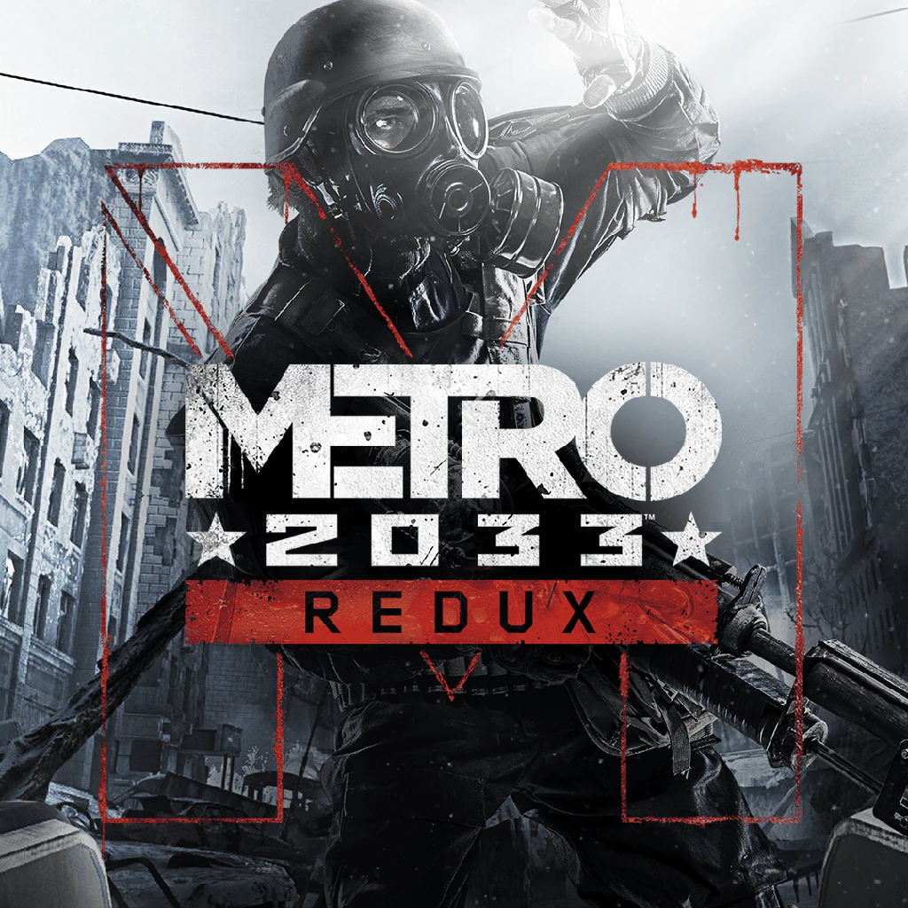
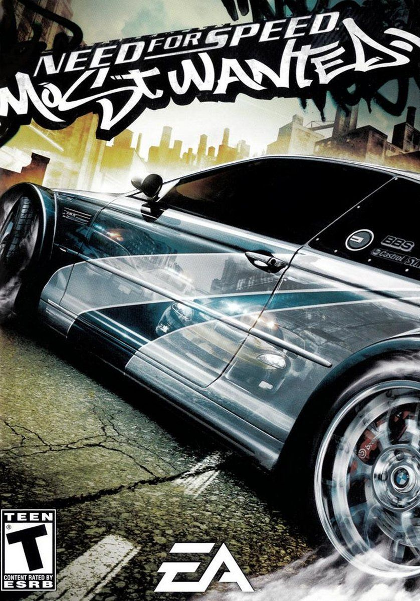
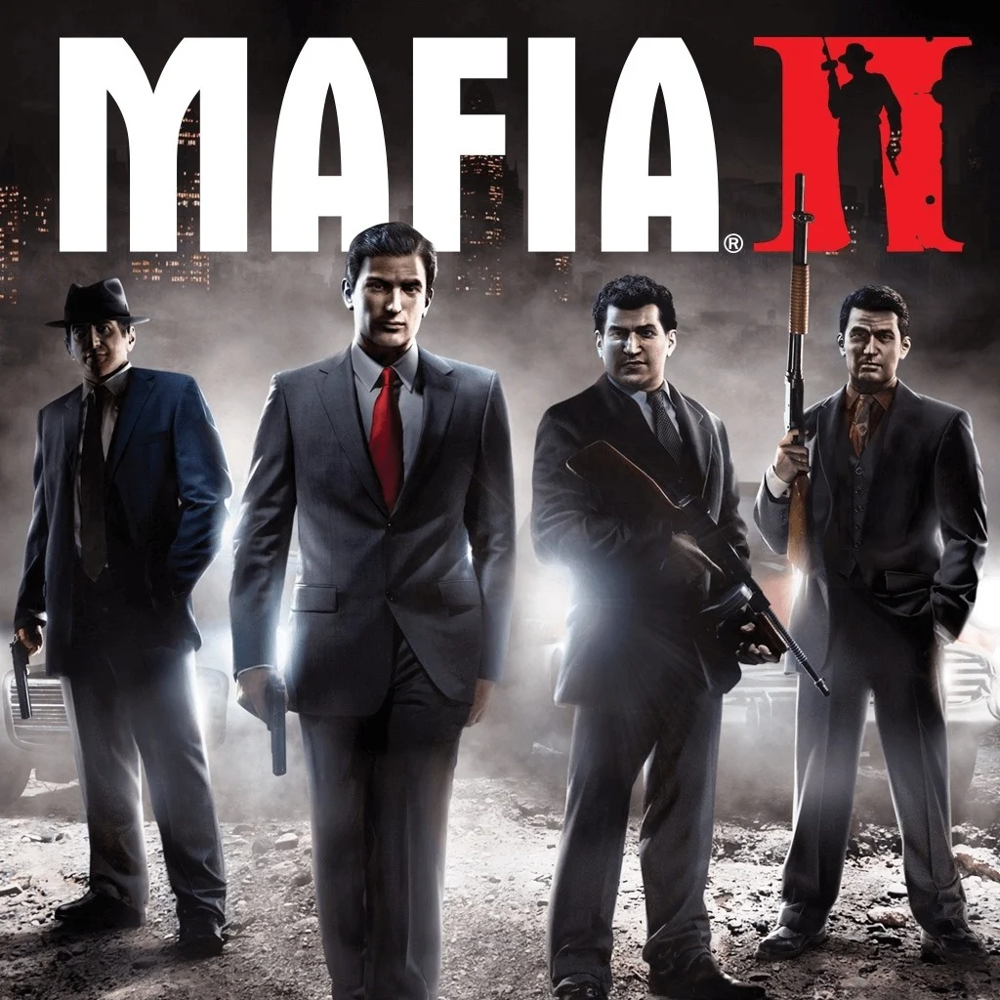
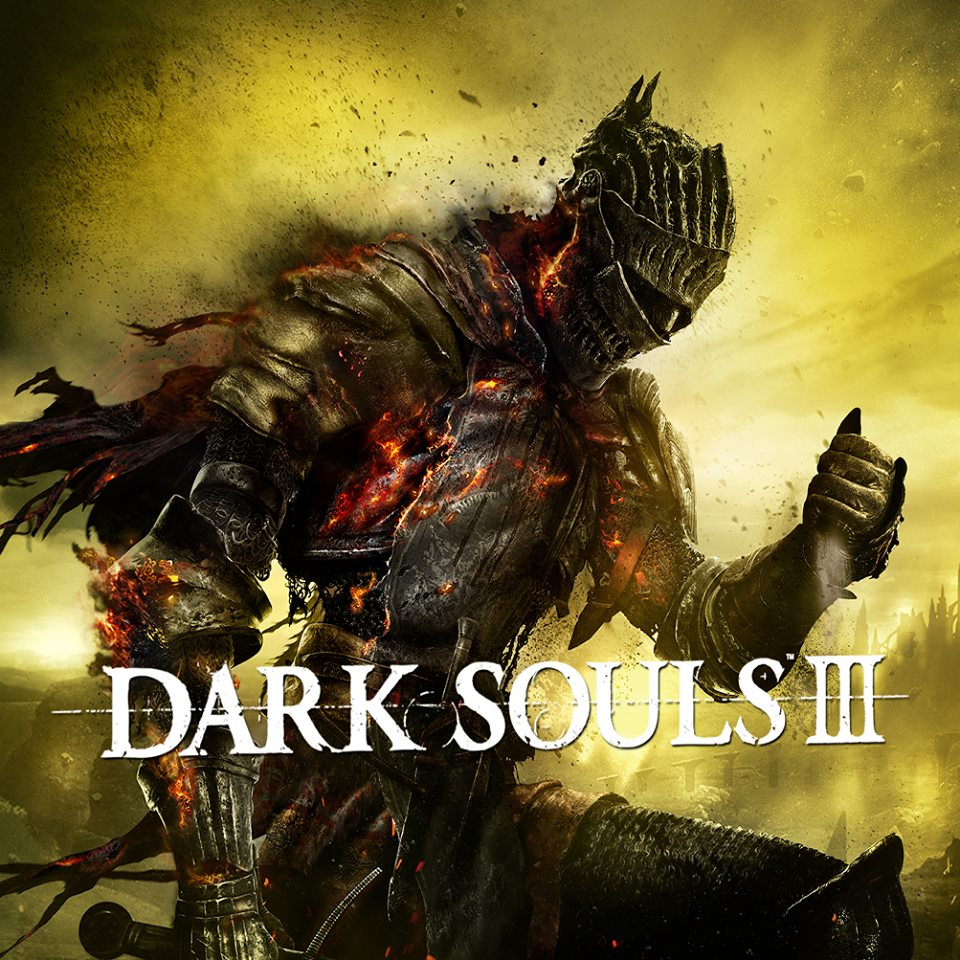
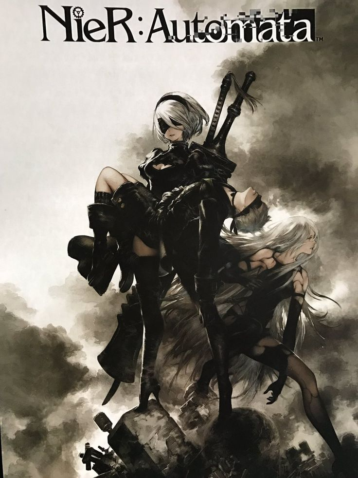
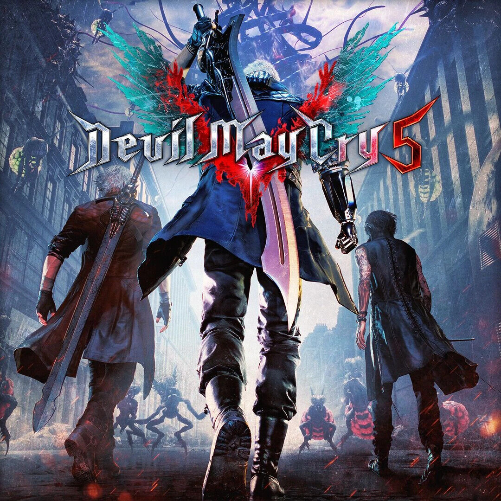
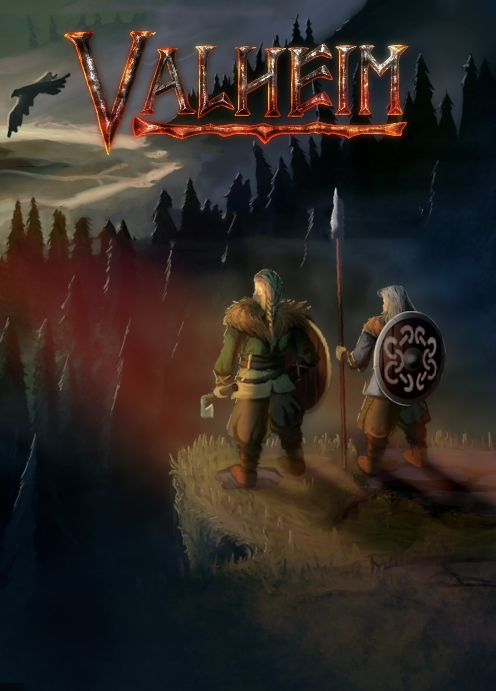

Рейтинг Игр
Дисклеймер: оценка сюжета, душевности или интереса идет исключительно по моему мнению,
а оценка графики происходит исходя из года выхода игры и стилистики. То есть - даже если в игре 2D графика это не значит, что она плоха,
главное чтобы картинка на экране была приятна и не резала глаза.

Метро 2033 Redux(2016)
- Общая оценка: 9.0
- Сюжет: 9.0
- Графика: 7.0
- Интерес от игры: 10.0
- Музыка: 10.0
- Жанры: Шутер, Хоррор, Стелс, Драма
- Системные требования: Процессор: Dual Core CPU 2.2+ GHz, GeForce 8800 GT с 512 MB памяти
Одна из любимых игр, очень душевный и душецепляющий сюжет повествующий о постапокалептической Москве,
а точнее о остатках человечества, что прячутся от монстров и радиации в метро.
Станция на которой проживает главый герой Артем в опасности истребления, поэтому по ходу игры нужно будет
найти способ спасти свой "дом" от уничтожения монстами.
Да, графика и механики игры не на высоте, но есть в ней что-то такое душевное, что заставляет переирывать раз за разом.

Легенда аркадных гонок, до сих пор крайне популярна. Необычное для своего времени смешание сюжета и гонок. Игра способна завлечь
даже не особо интересующегося гонками человека, давая возможность кастомизации машин, достаточно широкий автопарк и агрессивный рок.
По сюжету мы приезжаем в город, где нас лишают нашей ласточки. нужно встать с колен, победить гонщиков из черного списка
и вернуть беху.

Mafia 2(2010)
- Общая оценка: 8.92
- Сюжет: 10.0
- Графика: 8.0
- Интерес от игры: 8.7
- Музыка: 9.0
- Жанры: Шутер от 3-го лица
- Системные требования: nVidia GeForce 9800 GTX / ATI Radeon HD 3870
Если хочется погрузиться в интереснейший сюжет или понаблюдать за жизнью мафии 50-х, то добро пожаловать. Захватывающая
истории жизни Вито Скалетты поведает о том, как простой парень с улиц потом и кровью добивается места под солнцем во враждебном городе.
Это одна из тех игр, которая способна завлечь любого на несколько десятков часов и пройти игру на одном дыхании.

Dark souls 3(2016)
- Общая оценка: 7.5
- Сюжет: 5.0
- Графика: 7.0
- Интерес от игры: 10.0
- Музыка: 10.0
- Жанры: Шутер от 3-го лица
- Системные требования: Процессор: Intel Core i3-2100 / AMD FX-6300, GeForce GTX 750 Ti / ATI Radeon HD 7950
Эх, мой первый соулслайк.. жопораздирающее веселье, способное погрузить в тяжелую деперессию, а этому на помощь прииходит
еще и красвый, но ужасаущее депрессивный lvl-design. Музыка, как и дизайн противников в игре просто шедевральны, японцы делают вещи.. Справедливости ради, Dark souls 3 одна из лучших, если не лучшая игры своего жанра
которая точно не оставит вас равнодушные.

Nier: Automata(2017)
- Общая оценка: 8.0
- Сюжет: 7.0
- Графика: 8.0
- Интерес от игры: 7.0
- Музыка: 10.0
- Жанры: Action/RPG, hack and slash
- Системные требования: Процессор: Intel Core i3 2100 or AMD A8-6500, GeForce GTX 770 VRAM 2GB or AMD Radeon R9 270X
Хороший слешер с интересным дизайном, приятной графикой и шикарной музыкой. Игры японская, поэтому тут очень много нетипичных моментов, например для игры
специально был разработам свой собственный язык на котором будут звучать некоторые композиции и будут общаться местные. Повествует о будущем, в котором машины
захватили землю, а юди бежали на луну. Играя за андроида 2B мы должны собирать данные на планете, но еще не ожидаем того, как начнут разворачиваться события.

Elden Ring(2022)
- Общая оценка: 8.62
- Сюжет: 5.0
- Графика: 9.5
- Интерес от игры: 10.0
- Музыка: 10.0
- Жанры: Action/RPG
- Системные требования: Процессор: Intel Core i5-8400/AMD Ryzen 3 3300X, NVIDIA GeForce GTX 1060 (3 Гб)/AMD Radeon RX 580 (4 Гб)
Венец творения Миядзаки) первый соулс-лайк с открытым миром. как и в других играх серии дизайн, боссы и музыка на высоте, а главная проблема Dark Souls-ов,
то есть их краткость была исправлена, теперь без всяких усилий прохождение займет 100+ часов.

Devil May Cry(2019)
- Общая оценка: 8.55
- Сюжет: 7.5
- Графика: 9.4
- Интерес от игры: 7.3
- Музыка: 10.0
- Жанры: Action/RPG, hack and slash
- Системные требования: Процессор: Intel® Core™ i7-3770, AMD FX™-9590, NVIDIA GeForce GTX 1060 (3 Гб)/AMD Radeon RX 580 (4 Гб)
Последняя часть легендарной серии, даже не знаю к чему придраться, пожалуй только к самому геймлею, так как это слешер в самом буквальном его понимании
,и после 10 часов геймлея все это начинает приедаться, но игра не особо длинная, так что надоесть не успеет. Сюжет отлично подитоживает историю Данте, Неро и
Вергилия, но у людей, не игравших в предыдущие части могут возникнуть вопросы, так что советую хотя бы посмотреть краткий пересказ.

Valheim(2021)
- Общая оценка: 5.87
- Сюжет: 5.5
- Графика: 4.0
- Интерес от игры: 7.0
- Музыка: 7.0
- Жанры: симулятор выживания
- Системные требования: Процессор: Процессор: 2.6 GHz Dual Core, GeForce GTX 500
Неплохая выживалка про викингов, сюжет как и графон страдают, но музыка атмосферная. На самом деле единственное, что спасает игру - это
кооператив, без него скука смертная, а так можно поприкалываться с друзьями. Игра пока в бете, поэтому и чувствовалась в 2021 сырой.